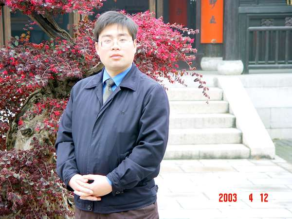

有志青年〔陈有志〕，江苏省南通人，现年30，已婚，教育系统工作，除了上网，下棋之外没有其余爱好。
不会打牌，不会喝酒，不抽烟。
上学期间曾下过无禁手规则的五子棋，95年工作，约99年前后在同事中兴起娱乐兴致的五子棋〔有禁手规则〕；
2000年在同事的鼓励下参加区教工五子棋大赛〔无禁手〕，初赛惨遭淘汰；
2001年卷土重来，继续参加区教工五子棋大赛〔有禁手〕，杀入决赛，最后成功挑下去年冠军；
2002年因工作调动，没能参加最后的决赛，于是冠军属于一路杀到我面前的“温柔一刀”老师，我为亚军；
2003年，已经一年多没有碰五子棋了，因工作调动，人处于迷惘中，在网上和“银元”下棋，结果被杀得片甲不留；
2004－2005年，已经不敢下五子棋了，同办公室的“路程”多次挑衅我，我都不敢下。
2005年底，在彷徨了两年之后，重新确立五子棋为自己的兴趣爱好，于是开始组织南通市五子棋活动，直到现在。
2006年6月开始接触rif规则，算是正式开始学棋吧。不过依然不敢公开下棋。

［此帖子已被 有志青年 在 2012-2-9 12:25:35 编辑过］
有志比我还小5岁呢,还算年轻,加油吧~
有孤竹大哥的鼓励，我一定继续努力。
［此帖子已被 有志青年 在 2012-2-9 12:25:53 编辑过］
2000年在同事的鼓励下参加区教工五子棋大赛〔无禁手〕，初赛惨遭淘汰
是不是运气不佳,轮到你拿白棋了?
那时候完全就是一种好玩，还不知道下五子棋是有谱的呢？还有开局一说？
问个有志一个问题,如果你发现你的学生在上课的时候在本子上画格子,下五子棋怎么办?
哈哈,有时候我就在课堂上这么做
楼上兄弟强人！
学习也很重要哟。
有志老弟好,这个网站做的不错,辛苦了,向你慰问,向你致敬!
以前在游戏里乱逛,看到别的省都有五子棋论坛,总感觉十分遥远,自从进了这个论坛,感觉亲近多了.
总得有个开头,偶先来灌点水!
［此帖子已被 有志青年 在 2012-2-9 12:26:15 编辑过］
 小包包的老婆路过
小包包的老婆路过 ［此帖子已被 有志青年 在 2012-2-9 12:26:53 编辑过］
引用：
原文由 longfx 发表于 2006-8-26 11:34:30 :问个有志一个问题,如果你发现你的学生在上课的时候在本子上画格子,下五子棋怎么办?
哈哈,有时候我就在课堂上这么做
我说上课不用画格子，直接买几何本子好了，几何本子刚刚合适下五子棋．哈哈
 我上课时 专看棋谱 不听课！！哈哈
我上课时 专看棋谱 不听课！！哈哈
那时侯简直疯了！！
［此帖子已被 有志青年 在 2012-2-9 12:26:45 编辑过］
偶年纪大了，容易犯糊涂，不知还能练否？
帅帅的造型啊!

［此帖子已被 有志青年 在 2012-2-9 12:27:45 编辑过］
哎，看了有志青年，我感觉我年轻多了，哈哈
再怎么我还没30呢，开心开心~
我接触五子棋在94年，就下了一年，哪个时候我记的，好象还有过一次全国推广之类的活动吧
现在再接触，发现自己落后太多了
我要加油加油